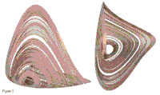
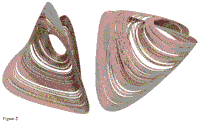
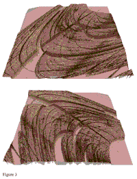

Visualising Chaos in a Model of
Brain Electrical Activity
Mathew P. Dafilis1,
Paul D. Bourke2,
David T.J. Liley1,
Peter J. Cadusch3.
Computers and Graphics, Volume 26, Issue 6, Pages 971-976, December 2002.
Doi: 10.1016/S0097-8493(02)00183-8
1
Centre for Intelligent Systems and Complex Processes,
Swinburne University of Technology, Victoria, Australia.
2
Centre of Astrophysics and Supercomputing, Swinburne University
of Technology, Victoria, Australia.
3
School of Biophysical Sciences and Electrical Engineering,
Swinburne University of Technology, Victoria, Australia.
Abstract
It is a major source of contention in brain dynamics as to whether
the electrical rhythms of the brain show signs of chaos. Here
we discuss evidence for the existence of chaos in a theory of
brain electrical activity and provide unique depictions of the
dynamics of this model.
Figures
|

|
Figure 1
Two complementary views of a chaotic attractor from the model shown from
two different perspective. Note the shadowing and how it provides
an enhanced sense of the depth of the attractor.
|
|

|
Figure 2
Two different views of another chaotic attractor. Note how the rendering
provides a perspective on the interleaving of the attractor's sheets and folds.
|
|

|
Figure 3
Two different views of the parameter space plane of the model with the
largest Lyapunov exponent of the system as the dependent variable and
the external excitatory input pulse density to the excitatory
(pee) and inhibitory (pei) populations as the
independent variables.
|
PDF
cg_paper.pdf
|
{kind=link}
{kind=link}
{kind=link}